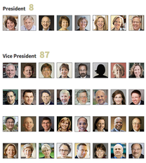
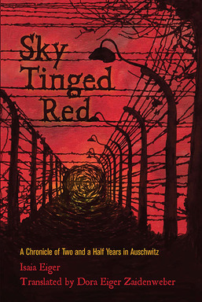
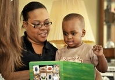

Data
Using spreadsheets, databases and the occasional FOIA request, I tell stories on higher education using data--often about money and compensation, but also about college access, demographics and the changing academic profession.
What They Make: Public College Executive Compensation
For this annual package, I conducted a survey of more than 200 public universities, collected and analyzed the responses, and worked with our developer and another reporter to interpret the data and present it effectively in an interactive tool. I also wrote a story about the uncalculated benefit of housing that many college presidents receive and that neither they nor their employers pay taxes on. This project was cited widely in both national and local press.
The Look of Leadership in the Ivy League
This interactive feature presented readers with photos of top administrators to help them visualize the lack of diversity among Ivy League administrations. I worked with a team of reporters, editors and developers to conceive of this project, collect and sort data about administrators, and shape the final presentation.
The Adjunct Project
For this project, a crowdsourced effort by the Chronicle of Higher Education to collect data on the salaries and working conditions of adjunct faculty across the country, I helped organize and edit the data, and worked to find and correct inconsistencies. I also analyzed the initial data for this story, which I wrote with reporter Audrey Williams June.
Writing
As a data journalist, I tell stories with Excel formulas and SQL queries just as often, if not more, than with words. But writing is my first passion and the skill that got me into journalism in the first place. Below are some of my favorite writing clips.
For Many Public-College Presidents, Home is an Uncalculated Benefit
The president of the University of Washington lives rent-free and tax-free in a 12,800-square-foot, 35-room home overlooking Lake Washington. But trying to calculate the actual value of a university presidents' house is harder than it may seem. (May 12, 2013)
Albrecht Muth Awaits Judge's Ruling on his Mental Competency
This story, written and reported for Homicide Watch D.C., during Novemember and December 2012, was the culmination of three weeks of reporting in D.C. Superior Court on the mental competency hearing for Albrecht Muth, who was suspected in the murder of his wife.
Farewell, Food Swaps (At Least for Now)
The story of how Minnesota, a pioneer in food co-ops and one of the first states where food swaps--monthly exchanges of homemade edibles--took root, also became the first (and so far only) state to shut them down. Published (in print!) in Thirty Two Magazine, a new publication on culture and ideas in the thirty-second state. (No. 3, Winter 2013)
Sky Tinged Red: Foreword
In April 2013, my family posthumously published my great-grandfather's chronicle of the two-and-a-half years he spent in Auschwitz-Birkenau, from April 1942 to November 1944. Written shortly after the war, translated from the original Yiddish by my grandmother decades later, and brought to publication through the efforts of several family members, Sky Tinged Red was truly a multigenerational project. I wrote the foreword and afterword (which you'll have to buy the book to read, detailing my family's life before and after the Holocaust. Click on the cover photo to learn more about the book, or click here to purchase it.
Multimedia
I can still remember my first film camera, an ugly rectangular hunk of plastic with nothing but a viewfinder and a shutter button. I walked around the house with it (usually there wasn't any film) taking photos of my family and stuffed animals (I was probably 6 years old). I've since graduated to a DSLR, but my desire to tell stories visually hasn't changed. Over the past several years I've added audio, video and even some HTML/CSS (this website was built from scratch) to my toolbox of multimedia storytelling.
Falling Behind Before Kindergarten: The 30-Million Word Gap
Children from lower-income families will hear, on average, 30-million fewer words by the time they turn four than their peers from high-income households. This vocabulary gap quickly turns into an achievement gap when these children enter school. This audio piece, about research that hopes to close the 30-million word gap, was produced with Lindsey Kratochwill for WBEZ's Front & Center series on literacy in the Great Lakes region. (June 15, 2012)
Photography

Photography is not only my favorite art form, but also one of my favorite tools for engaging with the world around me and, of course, telling stories. In college, my photos were selected for three straight years for the Open Shutter project, a student-run exhibit featuring photography that complicates, rather than simplifies, our view of the world. Click above to see my photostream on Flickr.